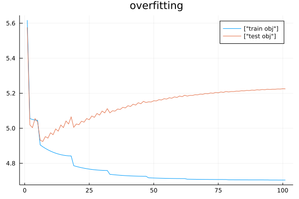

Handle unrelated stopping criteria
In this tutorial, we present the use of Stopping to specify an "unrelated" stopping criterion. A typical example is the so-called case of "overfitting", where the optimization process is actually designed to approximate another problem.
using ADNLPModels, LinearAlgebra, NLPModels, Plots, Printf, Random, StoppingIn this tutorial, we will use the classical steepest descent method with an Armijo line-search.
import Stopping.armijo
function armijo(xk, dk, fk, slope, f)
t = 1.0
fk_new = f(xk + dk)
while f(xk + t * dk) > fk + 1.0e-4 * t * slope
t /= 1.5
fk_new = f(xk + t * dk)
end
return t, fk_new
end
function steepest_descent(stp :: NLPStopping)
xk = stp.current_state.x
fk, gk = objgrad(stp.pb, xk)
OK = update_and_start!(stp, fx = fk, gx = gk)
@printf "%2s %9s %7s %7s %7s\n" "k" "fk" "||∇f(x)||" "t" "λ"
@printf "%2d %7.1e %7.1e\n" stp.meta.nb_of_stop fk norm(stp.current_state.current_score)
while !OK
dk = - gk
slope = dot(dk, gk)
t, fk = armijo(xk, dk, fk, slope, x->obj(stp.pb, x))
xk += t * dk
fk, gk = objgrad(stp.pb, xk)
OK = update_and_stop!(stp, x = xk, fx = fk, gx = gk)
@printf "%2d %9.2e %7.1e %7.1e %7.1e\n" stp.meta.nb_of_stop fk norm(stp.current_state.current_score) t slope
end
return stp
endWe also generate randomly some data.
Random.seed!(1234)
m, n = 50, 10
A = rand(m, n)
b = A * ones(n)
D = vcat(A, A) + vcat(zeros(m,n), rand(m,n))
Db = vcat(b, b)
rperm = shuffle(1:2m)
Dr = D[rperm,:]
Dbr = Db[rperm,:]We initialize two different problems evaluating respectively a training set, and a test set.
f(x, A, b, λ) = norm(A * x - b)^2 + λ * norm(x)^2
train_pb = ADNLPModel(x -> f(x, Dr[1:m,:], Dbr[1:m], 1e-2), zeros(n))
test_pb = ADNLPModel(x -> f(x, Dr[m+1:2m,:], Dbr[m+1:2m], 0.0), zeros(n))In this tutorial, the motivation is to use the solver on the test_pb, and track the efficiency of the computed solution on the train_pb. We specialize the stopping structure to store the objective function of both problems in the stopping_user_struct, and evaluate them in the stp.meta.user_check_func!.
train_check(stp, b) = begin
stp.stopping_user_struct[:test_obj][stp.meta.nb_of_stop+1] = obj(stp.stopping_user_struct[:test], stp.current_state.x)
stp.stopping_user_struct[:train_obj][stp.meta.nb_of_stop+1] = obj(stp.pb, stp.current_state.x)
end
train_obj = NaN * ones(101)
test_obj = NaN * ones(101)
train_stp = NLPStopping(train_pb, user_struct = Dict(:test => test_pb, :train_obj => train_obj, :test_obj => test_obj), user_check_func! = train_check, max_iter = 100)We now run the steepest descent algorithm with the train_stp stopping.
steepest_descent(train_stp)On the following plot in logarithmic scale, we can see that after a number of iterations, the progress made by the solver are no longer improving the other problem.
#hcat(log.(train_stp.stopping_user_struct[:train_obj]), log.(train_stp.stopping_user_struct[:test_obj]))
plot(log.(train_stp.stopping_user_struct[:train_obj]), label=["train obj"])
plot!(log.(train_stp.stopping_user_struct[:test_obj]), label=["test obj"], title="overfitting")
To overcome this issue, one possibility is to stop the solver when the second is no longer being minimized. The only modification is to set the entry meta.stopbyuser to true.
train_check_opt(stp, b) = begin
k = stp.meta.nb_of_stop
stp.stopping_user_struct[:test_obj][k+1] = obj(stp.stopping_user_struct[:test], stp.current_state.x)
stp.stopping_user_struct[:train_obj][k+1] = obj(stp.pb, stp.current_state.x)
diff = k!=0 && stp.stopping_user_struct[:test_obj][k+1] - stp.stopping_user_struct[:train_obj][k+1] > 10
inc = k!=0 && stp.stopping_user_struct[:test_obj][k+1] > stp.stopping_user_struct[:test_obj][k]
if diff && inc
stp.meta.stopbyuser = true
end
end
train_stp.meta.user_check_func! = train_check_opt
reset!(train_stp.pb)
reinit!(train_stp, rstate=true, x = zeros(10))
steepest_descent(train_stp)nb_iter = train_stp.meta.nb_of_stop
hcat(log.(train_stp.stopping_user_struct[:train_obj][1:nb_iter+1]), log.(train_stp.stopping_user_struct[:test_obj][1:nb_iter+1]))
plot(log.(train_stp.stopping_user_struct[:train_obj][1:nb_iter+1]), label=["train obj"])
plot!(log.(train_stp.stopping_user_struct[:test_obj][1:nb_iter+1]), label=["test obj"], title="overfitting")